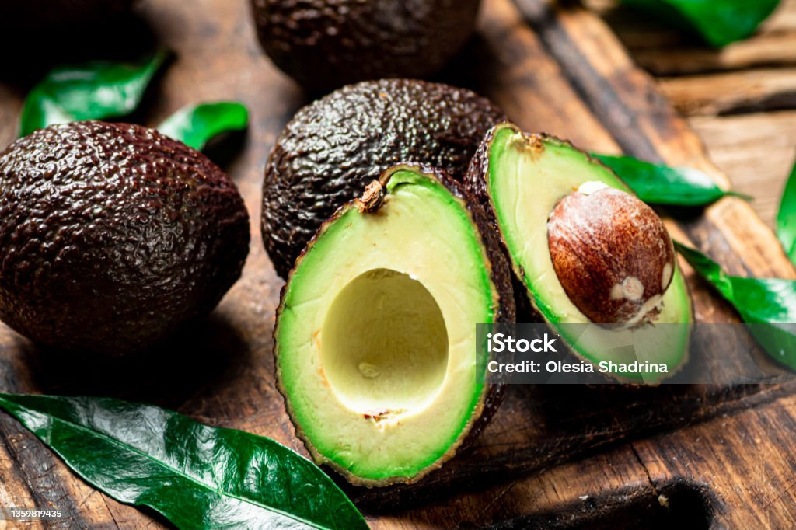

Ingredient Spotlight - Avocado
Avocado, often hailed as nature's butter, has transcended its popularity in guacamole. Explore the rich world of avocados, from their historical roots to their diverse culinary applications.
1. Origins and Varieties:
Begin with an exploration of the origins of avocados, tracing their roots back to Central and South America. Discuss various avocado varieties such as Hass, Fuerte, and Reed, accompanied by detailed images illustrating the distinct characteristics of each.
2. Nutritional Benefits:
Delve deeper into the nutritional richness of avocados, breaking down the monounsaturated fats, vitamins (especially vitamin K and folate), and minerals they offer. Create visually appealing infographics or charts to present nutritional information in a digestible format.

3. Culinary Versatility:
Showcase the versatility of avocados in the kitchen. Provide a selection of recipes ranging from the classic guacamole to avocado chocolate mousse. Integrate high-quality images and step-by-step cooking videos to guide readers through the preparation process.


4. Sustainability and Farming Practices:
Shed light on sustainable avocado farming practices, addressing concerns related to deforestation and water usage. Use infographics or charts to illustrate eco-friendly farming techniques, and include images capturing the scenic avocado orchards.

5. Tips for Selection and Storage:
Offer practical tips on selecting ripe avocados based on touch and color cues. Provide guidance on optimal storage conditions to prevent premature ripening. Include images demonstrating the stages of ripeness and the best ways to store avocados.
6. Avocado Artistry:
Unveil the artistic side of avocados, showcasing intricate carvings, garnishes, and culinary presentations. Feature images of visually stunning avocado creations and perhaps a time-lapse video of an avocado carving artist at work.
Conclusion:
In conclusion, avocados prove to be more than just a culinary delight; they are a nutritional powerhouse and a canvas for culinary creativity. From exploring their origins and varieties to uncovering their sustainable cultivation, we've journeyed through the diverse facets of this green gem. Whether you're savoring the creamy texture in classic guacamole or experimenting with avocado artistry, the possibilities are as rich and varied as the fruit itself. As you embark on your avocado culinary adventures, share your experiences and favorite recipes with our community. Let the avocado inspire not only your taste buds but also your imagination.